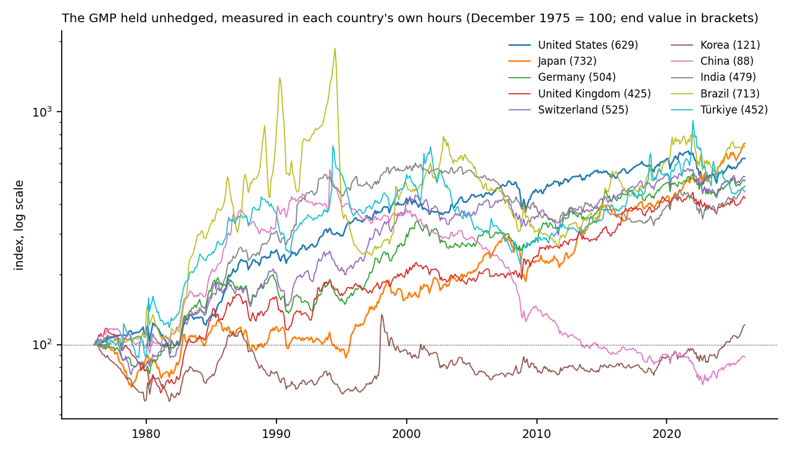
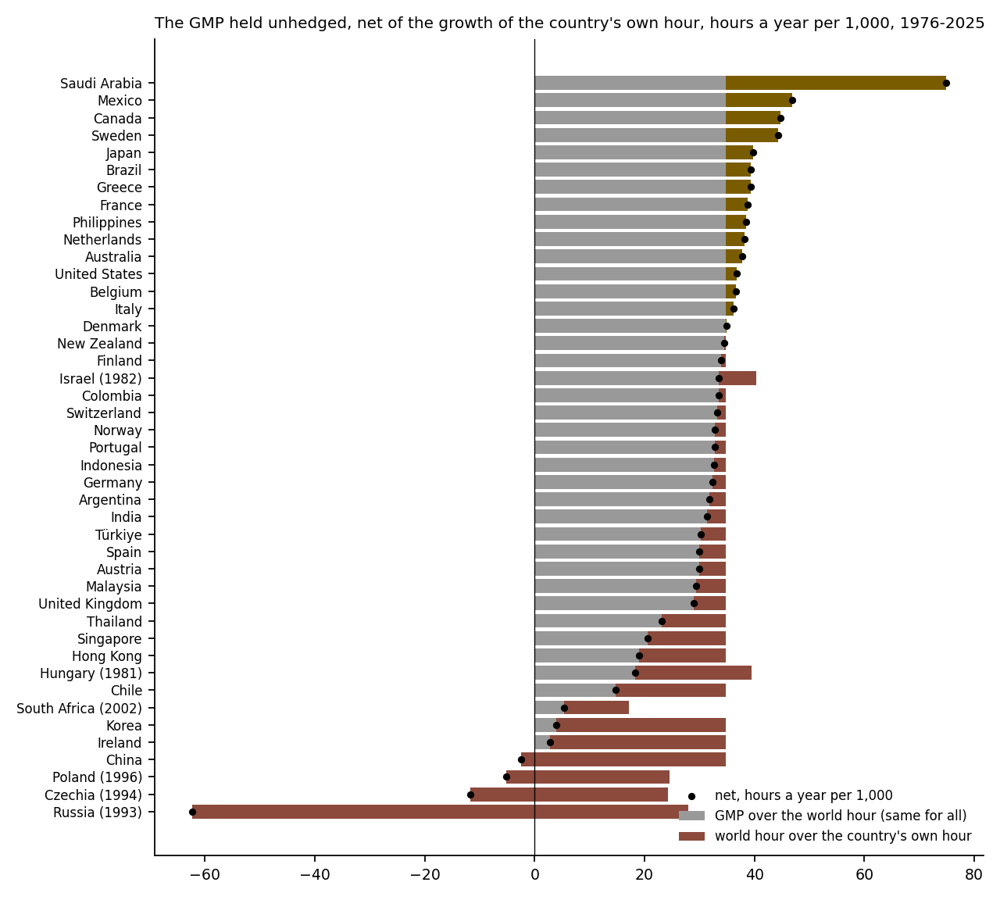
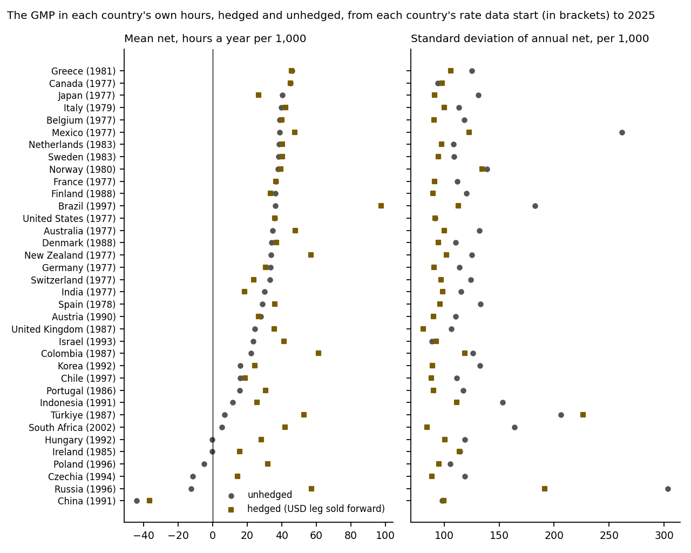
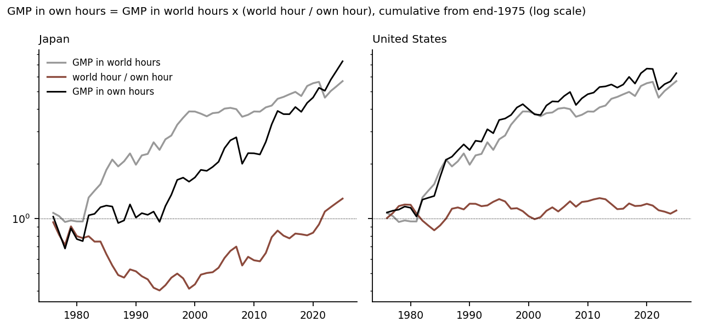

The resident’s question. Research note, v1.0, 23 November 2026. Keisuke Nakanishi.
This is a review-style note intended for open publication, not a journal submission. All series were built by the author from free public data: the frozen engine and the world hour behind the first four notes, BIS exchange rates, OECD short-term interest rates, the World Bank, the Penn World Table and FRED. No third-party proprietary data is redistributed, no index-vendor data is used, and no tables or figures from other publications are reproduced. Generative AI tools (Claude, Anthropic) were used for drafting, editorial review and writing analysis code, and as a discussion partner in analysis design. The author specified the questions, reviewed and ran all code, checked the outputs against the source data, and is responsible for all results. The analysis is exploratory: it was not pre-registered, and it was run with the results visible. The per-country results of Sections 4 and 5 were recomputed by a second script written from the definitions in Section 2 rather than from the build code; it reproduces all 43 unhedged figures and 4 hedged figures to within 0.05 hours per 1,000. SSRN identifier: 7742900 (doi:10.2139/ssrn.7742900; under SSRN review). Code and derived data: https://github.com/thecapitalcensus/world-in-own-hours.
Licence: the text of this note, as published on this site, is CC BY-NC-ND 4.0; any SSRN posting is governed by SSRN’s terms, with copyright retained by the author. Series that depend on the frozen engine and the world hour follow the terms of the CC-GMP TR and CC-WH series (CC BY-NC 4.0); the World Bank and Penn World Table data are used under CC BY 4.0, OECD data under the OECD terms and conditions, and BIS and FRED data with attribution to their publishers.
The first note built an index of the investable global market portfolio (GMP) and reported it in US dollars (Nakanishi 2026a). The second built the world hour, and the third and fourth measured the GMP, the home and the pension in it (Nakanishi 2026b, 2026d, 2026e). Every result so far was addressed to no one in particular: a holder of the world’s capital measured against the world’s work. This note asks the question a resident asks. A person who works in one country and holds the whole world: does the holding grow or shrink against an hour of their own country’s work? It measures the GMP in the national hour — nominal GDP per hour worked in local currency — of each of the 43 countries in the world-hour panel, from 1976 to 2025, unhedged and with the dollar leg sold forward.
Five results follow.
The resident’s answer is therefore the world’s answer plus a term that has nothing to do with the portfolio: whether the country’s own hour, in dollars, gained or lost on the world’s. For most residents of rich countries the term was small; for the residents of countries that converged, it was most of the story.
A fifty-year return in dollars (Nakanishi 2026a) is an answer for a holder who consumes in dollars at world prices. Note 2 replaced the dollar with the world hour; notes 3 and 4 found that the GMP beat it by 34.8 hours a year per 1,000 over 1976–2025 (Nakanishi 2026b, 2026d, 2026e). That is still an answer for nobody in particular. A resident of Japan is paid in yen for hours worked in Japan, and the question they ask of a world portfolio is whether it commands more or fewer hours of Japanese work than it cost. Note 4 introduced the national hour to ask that question of the home and the pension (Nakanishi 2026e, Section 2). This note asks it of the GMP, for every country in the panel.
The first note left one practical matter open. It called currency “the largest design variable for non-USD investors”, cited Goldman Sachs’s finding that hedged bond allocations had a higher Sharpe ratio than unhedged, reported that the author’s own 2008–2026 tests found the same, and added that the long-sample replication did not confirm the effect at significance (Nakanishi 2026a, Section 7). This note is that replication, on fifty years and 43 countries (33 currencies, the euro area counting as one), in the unit a resident cares about.
Two literatures bear on the design. The first is on currency hedging of international portfolios: Perold and Schulman (1988) argued that hedging is a “free lunch” in the long run because currency has no expected return; Froot (1993) that over long horizons purchasing-power parity makes the unhedged position safer; Campbell, Serfaty-de Medeiros and Viceira (2010) that the answer depends on which currencies move against equities. The second is the forward premium puzzle (Fama 1984): currencies of high-interest countries depreciate by less than the interest differential, so a hedge earns the differential and pays only part of it back. Both appear below, in hours rather than in any currency.
The national hour. A country’s nominal GDP in local currency (World Bank) divided by its total hours worked (Penn World Table persons engaged times average annual hours), as in note 4. China and Saudi Arabia have no hours series; their hours per worker are held at 2,100 a year, as in note 2, so their national hour grows with GDP per worker. For 2024 and 2025 total hours are extended with World Bank labour-force growth. The national hour is a calendar-year quantity; its growth in year y is the log change from y−1 to y.
The GMP in local currency. The frozen engine’s monthly US-dollar total return (note 1), converted at the BIS monthly-average exchange rate. Annual returns are December to December. “Unhedged” is this series.
The GMP hedged. The US-dollar return plus, each month, one-twelfth of the difference between the country’s short rate and the US short rate in the previous month (OECD monthly averages; annual rates in per cent, divided by 1,200). The monthly returns are compounded into levels and read December to December, so the annual “interest differential” of Table 5 is the compounded result of the monthly terms, not twelve times a simple average. Under covered interest parity this is the return on a holding whose dollar value is sold forward one month at a time: the resident keeps the GMP’s return and swaps the dollar’s movement against their currency for the interest differential. Rates are the OECD 3-month interbank rate, except where the 3-month series begins after 1990 and the OECD immediate (overnight) rate begins earlier; there the immediate rate is used throughout, to keep the longer sample (Switzerland, Chile, China, Greece, Indonesia, India, Mexico, Poland, Russia; Table A1 lists the series by country). The US leg is matched by instrument. Japan uses the OECD immediate rate from July 1985 and the Bank of Japan discount rate before, both against the US immediate rate. This hedges the dollar leg. The GMP holds assets in many currencies; a hedge of each of them would need the index’s currency weights and every cross rate, and is not attempted. What is measured is what a resident does who buys a dollar-denominated world fund and hedges it into their own currency.
Net, in own hours. As in notes 3 and 4: capital worth 1,000 hours that returns TR (log) in local currency generates 1,000 × TR hours’ worth of currency in a year; 1,000 × g of them are needed to keep pace with a national hour growing at g; the net is the difference. Ten hours per 1,000 is 1% a year (log).
The identity. Writing r for the GMP’s dollar return, w for the growth of the world hour in dollars, n for the growth of the national hour in local currency and x for the depreciation of the local currency against the dollar, all in logs,
net in own hours = (r + x) − n = (r − w) + (w − (n − x)).
The first bracket is the GMP in world hours, the quantity of notes 3 and 4, and is the same for every resident. The second is the growth of the world hour in dollars less the growth of the country’s own hour in dollars: positive when the country’s hour fell behind the world’s, negative when it caught up. The identity is exact when the same December exchange rate is used in both terms, which it is here; the build asserts it to machine precision.
Weights and periods. Country aggregates use the previous year’s World Bank GDP in US dollars, renormalised over the countries with data in that year, as in note 2. The periods are those of notes 3 and 4: 1976–1981, 1982–2000, 2001–2020, 2021–2025.
| Source | Used for | Terms |
|---|---|---|
| Frozen engine (note 1; weight history Nakanishi 2026c) | GMP monthly total return, USD, 1976-01 to 2026-08; public CC-GMP TR level series as a cross-check | CC BY-NC 4.0 |
| CC-WH (note 2) | World hour: GDP-weighted nominal GDP per hour worked, 43 countries, monthly index to 2026-03 (hard data to 2025-06) | CC BY-NC 4.0 |
| BIS WS_XRU | Monthly average exchange rates against the US dollar, 43 economies, 1975-01 to 2026-10 | BIS terms (attribution) |
| World Bank WDI | GDP in current local currency (NY.GDP.MKTP.CN) and US dollars (NY.GDP.MKTP.CD), labour force (SL.TLF.TOTL.IN), 1960–2025 | CC BY 4.0 |
| Penn World Table 10/11 via FRED | Persons engaged and average annual hours worked, 1950–2023 (no hours series for China and Saudi Arabia; interior gaps, Netherlands 1969 and South Africa 2015, interpolated) | CC BY 4.0 |
| OECD DF_FINMARK | Short-term interest rates: 3-month interbank (IR3TIB) and immediate/overnight (IRSTCI), monthly, % p.a. | OECD terms |
| FRED / IMF | US 3-month Treasury bill (TB3MS); Bank of Japan discount rate (INTDSRJPM193N) for 1976–1985 | Public, attribution |
The panel is the 43 countries of the world hour (note 2). The GMP return runs from January 1976 to 2026-08-31; this note uses it to December 2025, the last year with a national hour. BIS exchange rates begin in 1975 for every country except Czechia (1993) and Russia (1992); hours series begin later for Hungary (1980), Israel (1981), Poland (1995) and South Africa (2001), so those six countries enter from the year after their data begin and the other 37 cover the full fifty years (Table A1). Interior gaps in the hours-per-worker series (Netherlands 1969 and South Africa 2015) are filled by log-linear interpolation; only the South African one falls inside the sample. Every column of a country’s row is a mean over the same years. The euro-area members’ series are expressed in euro throughout by both the BIS and the World Bank, so no splice is needed.
A consistency check on the world hour. The world hour of note 2 is a chain index of exactly these countries’ GDP per hour in dollars. The GDP-weighted average of the 43 national hours in dollars built here, year by year, should therefore track it. It does: the correlation of annual growth rates is 0.997 and the mean difference 0.18 percentage points a year (output/check_world_hour_vs_panel.csv). The difference is the chaining and the extension of the hours data, and is the size of the gap one would expect between two builds of the same object.
Short rates are available for 36 countries, from 1977 for the large developed economies and from the 1980s or 1990s for most others (Table A1); seven countries (Argentina, Hong Kong, Malaysia, the Philippines, Saudi Arabia, Singapore, Thailand) have no OECD series and are unhedged only. Where a month is missing, the previous month’s rate is carried forward; the build log lists the counts. The cases inside the sample are: April 2020 for the US 3-month rate, and so one month for every country on 3-month rates; scattered months for Hungary (2004–2013) and Portugal (1987–1989); China’s immediate rate, which ends in June 2025 and is held for the rest of 2025, and Russia’s, which ends in October 2025; and, the one that matters, nine months of 2023 for Türkiye (February–June and September–December). Carried forward, Türkiye’s rate stays at 7.5% and then 23.5% through a year of sharp increases (the series itself is at 43.5% in January 2024), so Türkiye’s 2023 interest differential, and with it its hedged mean, are understated.

| Period | GMP, USD | World hour, USD | GMP in world hours | GMP in own hours, GDP-weighted | country median | World hour over own hour, GDP-weighted | country median | Countries positive | Countries | United States | Japan |
|---|---|---|---|---|---|---|---|---|---|---|---|
| 1976-1981 | 89.0 | 95.4 | −6.4 | −8.2 | −19.3 | −1.8 | −13.0 | 24% | 38 | 4.0 | −47.8 |
| 1982-2000 | 116.1 | 42.8 | 73.3 | 70.9 | 70.0 | −2.4 | −3.3 | 98% | 42 | 71.5 | 42.4 |
| 2001-2020 | 60.0 | 42.1 | 17.9 | 18.0 | 16.4 | 0.1 | −1.6 | 72% | 43 | 25.8 | 50.6 |
| 2021-2025 | 41.4 | 36.1 | 5.3 | 2.8 | 2.0 | −2.6 | −3.3 | 56% | 43 | −11.6 | 91.8 |
| 1976-2025 | 83.0 | 48.2 | 34.8 | 33.4 | 32.8 | −1.3 | −2.1 | 91% | 43 | 36.8 | 39.8 |
Over the half-century the GMP gained 34.8 hours a year per 1,000 on the world hour. Measured in the residents’ own hours, the GDP-weighted gain was 33.4 and the country median 32.8; on the 37 countries with full data, 34.5 and 33.2. The two agree because the world hour is, by construction, the weighted average of the national hours: what one resident gains on the world’s hour relative to their own, another loses.
The periods are the periods of note 3. In 1976–1981 the GMP lost 6.4 a year on the world hour and lost in the median country (−19.3; 9 of 38 countries positive): inflation raised the value of an hour faster than the portfolio grew. In 1982–2000 it gained 73.3 on the world hour and 70.0 in the median country, and in 41 of the 42 countries with data (the exceptions: Russia). Since 2001 the gains have been small: 16.4 a year in the median country over 2001–2020 and 2.0 over 2021–2025, with 72% and 56% of countries positive. The United States and Japan trade places: in 1976–1981 the American resident gained 4.0 and the Japanese lost 47.8; in 2021–2025 the American lost 11.6 a year, because the dollar value of an American hour grew faster than the portfolio, and the Japanese gained 91.8, because the yen fell.

| Country | GMP in local currency | Growth of own hour | Net | s.e. | World hour over own hour | End ÷ start | Worst 10-year window | 20-year windows negative | US bills, unhedged, net |
|---|---|---|---|---|---|---|---|---|---|
| Saudi Arabia | 84.2 | 9.3 | 74.9 | 27.3 | 40.1 | 42.3 | −22.4 | 0% | 34.4 |
| Mexico | 228.5 | 181.6 | 46.9 | 36.5 | 12.2 | 10.4 | −54.0 | 6% | 6.5 |
| Canada | 89.2 | 44.5 | 44.7 | 13.5 | 9.9 | 9.3 | −17.5 | 0% | 4.2 |
| Sweden | 97.9 | 53.6 | 44.4 | 17.2 | 9.6 | 9.2 | −9.1 | 0% | 3.9 |
| Japan | 69.5 | 29.7 | 39.8 | 17.4 | 5.0 | 7.3 | −18.5 | 0% | −0.7 |
| Brazil | 645.6 | 606.3 | 39.3 | 41.0 | 4.5 | 7.1 | −95.3 | 29% | −1.2 |
| Greece | 125.0 | 85.7 | 39.3 | 18.2 | 4.5 | 7.1 | −33.0 | 0% | −1.2 |
| France | 87.5 | 48.7 | 38.8 | 15.5 | 4.0 | 7.0 | −13.8 | 0% | −1.7 |
| Philippines | 124.2 | 85.7 | 38.5 | 18.8 | 3.7 | 6.8 | −41.7 | 19% | −2.0 |
| Netherlands | 75.8 | 37.6 | 38.3 | 15.9 | 3.5 | 6.8 | −20.8 | 0% | −2.2 |
| Australia | 95.7 | 57.9 | 37.7 | 18.5 | 3.0 | 6.6 | −51.7 | 0% | −2.7 |
| United States | 83.0 | 46.2 | 36.8 | 12.0 | 2.0 | 6.3 | −3.1 | 0% | −3.7 |
| Belgium | 80.2 | 43.6 | 36.6 | 16.8 | 1.8 | 6.2 | −12.1 | 0% | −3.9 |
| Italy | 100.6 | 64.4 | 36.2 | 16.1 | 1.4 | 6.1 | −11.1 | 0% | −4.2 |
| Denmark | 83.7 | 48.7 | 35.0 | 15.0 | 0.2 | 5.7 | −17.3 | 0% | −5.5 |
| New Zealand | 94.7 | 60.1 | 34.5 | 17.0 | −0.3 | 5.6 | −33.7 | 0% | −5.9 |
| Finland | 88.4 | 54.4 | 34.0 | 16.5 | −0.8 | 5.5 | −15.8 | 0% | −6.5 |
| Israel (1982) | 203.7 | 170.2 | 33.5 | 18.0 | −6.9 | 4.4 | −11.6 | 0% | −12.1 |
| Colombia | 177.9 | 144.5 | 33.5 | 19.9 | −1.3 | 5.3 | −46.2 | 0% | −7.0 |
| Switzerland | 59.0 | 25.9 | 33.2 | 16.1 | −1.6 | 5.3 | −17.3 | 0% | −7.3 |
| Norway | 94.9 | 62.1 | 32.9 | 18.3 | −1.9 | 5.2 | −42.5 | 0% | −7.6 |
| Portugal | 119.9 | 87.1 | 32.8 | 17.9 | −2.0 | 5.2 | −24.8 | 0% | −7.7 |
| Indonesia | 156.8 | 124.1 | 32.7 | 27.4 | −2.1 | 5.1 | −82.9 | 35% | −7.8 |
| Germany | 73.9 | 41.6 | 32.4 | 16.0 | −2.4 | 5.0 | −11.0 | 0% | −8.1 |
| Argentina | 645.8 | 614.0 | 31.8 | 56.8 | −3.0 | 4.9 | −167.1 | 6% | −8.7 |
| India | 129.1 | 97.7 | 31.3 | 16.2 | −3.4 | 4.8 | −53.5 | 48% | −9.1 |
| Türkiye | 380.2 | 350.0 | 30.2 | 24.3 | −4.6 | 4.5 | −63.3 | 26% | −10.3 |
| Spain | 100.3 | 70.4 | 30.0 | 18.8 | −4.8 | 4.5 | −25.2 | 0% | −10.5 |
| Austria | 73.9 | 44.0 | 29.9 | 15.2 | −4.9 | 4.5 | −18.4 | 0% | −10.6 |
| Malaysia | 92.1 | 62.8 | 29.3 | 18.9 | −5.4 | 4.3 | −37.1 | 0% | −11.1 |
| United Kingdom | 91.2 | 62.3 | 28.9 | 16.4 | −5.8 | 4.2 | 2.4 | 0% | −11.5 |
| Thailand | 91.7 | 68.6 | 23.1 | 17.9 | −11.7 | 3.2 | −41.9 | 29% | −17.4 |
| Singapore | 69.8 | 49.3 | 20.5 | 16.5 | −14.3 | 2.8 | −25.7 | 13% | −19.9 |
| Hong Kong | 91.6 | 72.7 | 18.9 | 14.7 | −15.8 | 2.6 | −29.4 | 0% | −21.5 |
| Hungary (1981) | 131.9 | 113.6 | 18.3 | 19.2 | −21.2 | 2.3 | −73.6 | 46% | −23.1 |
| Chile | 177.2 | 162.4 | 14.7 | 28.4 | −20.0 | 2.1 | −49.6 | 39% | −25.7 |
| South Africa (2002) | 75.0 | 69.6 | 5.4 | 35.9 | −11.8 | 1.1 | −65.6 | 20% | −37.6 |
| Korea | 105.1 | 101.2 | 3.9 | 18.1 | −30.9 | 1.2 | −47.3 | 29% | −36.6 |
| Ireland | 89.1 | 86.3 | 2.8 | 14.7 | −32.0 | 1.2 | −41.7 | 45% | −37.7 |
| China | 108.5 | 111.0 | −2.5 | 21.0 | −37.3 | 0.9 | −114.3 | 68% | −42.9 |
| Poland (1996) | 70.3 | 75.5 | −5.2 | 18.7 | −29.7 | 0.9 | −55.7 | 36% | −40.6 |
| Czechia (1994) | 48.9 | 60.5 | −11.7 | 20.5 | −35.9 | 0.7 | −75.6 | 77% | −47.4 |
| Russia (1993) | 222.8 | 285.1 | −62.3 | 61.7 | −90.3 | 0.1 | −182.2 | 100% | −101.7 |
The identity of Section 2 makes Table 3 easy to read. Every resident who held from 1976 got the same 34.8 hours a year from the GMP’s excess over the world hour. What separates them is the second term, and the second term is a fact about their country, not about the portfolio: it is how far the dollar value of an hour of their own work rose relative to an hour of the world’s. For the residents of the large developed economies it was small — 2.0 in the United States, 5.0 in Japan, −2.4 in Germany, −1.6 in Switzerland, −5.8 in the United Kingdom — and their results sit within a few hours of the world’s. It was large and negative where the country converged: −37.3 in China, whose hour went from US$0.17 in 1976 to US$12.5 in 2025; −30.9 in Korea; −32.0 in Ireland; −35.9, −29.7 and −90.3 in Czechia, Poland and Russia from the 1990s; −15.8, −14.3 and −11.7 in Hong Kong, Singapore and Thailand. It was large and positive where the country’s hour fell behind: 40.1 in Saudi Arabia, whose nominal GDP per worker barely rose over fifty years of oil-price cycles and immigration, 12.2 in Mexico, 9.9 in Canada, 9.6 in Sweden.
Three readings. First, for a resident of a converging economy, holding the world was a way of not taking part in the convergence: a Chinese holder of the GMP from 1976 ended with 0.88 of the hours of Chinese work they started with, and a Korean with 1.21, while an American ended with 6.3 times and a Japanese with 7.3 times. That is not a verdict on the portfolio — the Chinese and Korean residents’ own hour grew 111.0 and 101.2 hours per 1,000 a year in local currency, against 46.2 and 29.7 — but it is the arithmetic of a claim on the world held by someone whose own work was becoming worth more than the world’s. Second, a positive second term is not a reward: for a Saudi or Mexican resident it records that their own hour lost ground, so that a claim on the world’s work bought more of it. Third, the second term has no sign in expectation for a rich-country resident; across the 37 full-sample countries the median is close to zero, and the two parts are uncorrelated (Section 4.4).
The last column of Table 3 measures a resident who instead held US Treasury bills unhedged: the dollar plus its interest, in their own hours. It was negative in 39 of the 43 countries, from −3.7 a year for an American to −0.7 for a Japanese, −11.5 for a Briton and −36.6 for a Korean; it was positive only where the country’s own hour lost ground in dollars (Saudi Arabia 34.4, Mexico 6.5, Canada 4.2 and Sweden 3.9). Local bills, where short rates exist (Table 5, last column), were positive in 21 of the 36 countries but small in the large developed economies: 1.8 in the United States, −8.6 in Japan, −3.7 in Germany, −11.6 in Switzerland; in China deposits lost 7.6% a year against the Chinese hour (−75.7). Over the same years the GMP held unhedged beat local bills in 31 of the 36 countries; the exceptions are Brazil, Colombia, Russia, Türkiye and Poland, all of them economies whose short rates stood far above the dollar’s for long stretches of their sample.
The annual standard deviation of the world part, the GMP in world hours, is 85.1 hours per 1,000. The annual standard deviation of the country part is 85.0 in the median country, and its correlation with the world part is 0.04 in the median country. The sum has a median standard deviation of 123.9, which is what two uncorrelated risks of about 85 each add up to. A resident who holds the world therefore carries two risks of the same size: the world’s, which every holder shares, and the gap between their own hour and the world’s in dollars, which is theirs alone. In the median country the net was positive in 60% of years. The worst ten-year window was −33.7 hours a year in the median country (−3.1 in the United States, −18.5 in Japan, −11.0 in Germany, 2.4 in the United Kingdom); 18 of 43 countries had at least one negative twenty-year window, among them Korea (29% of windows, worst ten-year −47.3) and China (68%, worst −114.3). The windows overlap year by year and are historical frequencies, not probabilities.

| Period | Countries | Net, unhedged, median | Net, hedged, median | Hedged − unhedged, median | Hedged higher | s.d. unhedged, median | s.d. hedged, median | Hedged s.d. lower |
|---|---|---|---|---|---|---|---|---|
| 1976-1981 | 15 | −25.7 | −53.8 | −18.9 | 40% | 92.6 | 62.0 | 67% |
| 1982-2000 | 35 | 66.9 | 69.9 | 7.2 | 57% | 142.7 | 96.8 | 89% |
| 2001-2020 | 36 | 16.8 | 33.1 | 13.7 | 92% | 88.0 | 76.8 | 81% |
| 2021-2025 | 36 | 2.6 | −10.9 | −22.7 | 22% | 123.6 | 145.3 | 17% |
| 1976-2025 | 36 | 31.5 | 36.3 | 7.3 | 72% | 118.4 | 96.6 | 86% |
| Country | Net, unhedged | Net, hedged | Hedged − unhedged | s.e. | Interest differential | Depreciation vs USD | s.d. unhedged | s.d. hedged | Local bills, net |
|---|---|---|---|---|---|---|---|---|---|
| Russia (1996) | −12.6 | 57.2 | 69.8 | 46.9 | 164.2 | 94.4 | 303.4 | 191.3 | 23.6 |
| Brazil (1997) | 36.3 | 97.3 | 61.0 | 34.6 | 118.2 | 57.2 | 182.6 | 112.8 | 62.8 |
| Türkiye (1987) | 6.9 | 52.7 | 45.9 | 36.4 | 326.4 | 280.5 | 206.2 | 226.1 | 18.6 |
| Colombia (1987) | 22.1 | 61.3 | 39.2 | 19.5 | 112.5 | 73.3 | 126.1 | 118.7 | 28.1 |
| Poland (1996) | −5.2 | 31.8 | 37.0 | 18.5 | 49.0 | 12.0 | 105.6 | 95.1 | −2.0 |
| South Africa (2002) | 5.4 | 41.9 | 36.6 | 37.5 | 52.0 | 15.4 | 164.2 | 84.4 | 1.5 |
| Hungary (1992) | −0.3 | 28.2 | 28.5 | 19.0 | 71.2 | 42.7 | 118.7 | 100.5 | −7.4 |
| Czechia (1994) | −11.7 | 14.2 | 25.9 | 17.4 | 14.5 | −11.3 | 118.6 | 88.6 | −18.6 |
| New Zealand (1977) | 33.7 | 57.0 | 23.3 | 19.6 | 32.8 | 9.5 | 125.1 | 102.0 | 23.0 |
| Israel (1993) | 23.5 | 41.1 | 17.6 | 10.2 | 22.9 | 5.3 | 88.9 | 92.8 | 4.7 |
| Ireland (1985) | −0.4 | 15.5 | 15.9 | 17.6 | 6.4 | −9.5 | 114.4 | 113.9 | −26.0 |
| Portugal (1986) | 15.7 | 30.7 | 15.0 | 17.4 | 16.7 | 1.7 | 117.5 | 90.1 | −6.6 |
| Indonesia (1991) | 11.5 | 25.4 | 14.0 | 25.1 | 76.5 | 62.5 | 152.9 | 111.5 | −13.4 |
| Australia (1977) | 34.6 | 47.8 | 13.1 | 16.8 | 22.5 | 9.4 | 132.0 | 99.9 | 13.7 |
| United Kingdom (1987) | 24.5 | 35.7 | 11.3 | 14.9 | 13.1 | 1.8 | 106.5 | 81.0 | 2.3 |
| Mexico (1977) | 38.6 | 47.4 | 8.8 | 31.9 | 147.5 | 138.7 | 261.5 | 122.6 | 12.9 |
| Korea (1992) | 16.1 | 24.5 | 8.4 | 21.6 | 27.7 | 19.3 | 132.6 | 89.3 | −11.2 |
| China (1991) | −44.2 | −36.7 | 7.5 | 11.2 | 16.0 | 8.5 | 97.9 | 99.6 | −75.7 |
| Spain (1978) | 28.7 | 35.8 | 7.1 | 20.3 | 18.6 | 11.6 | 132.9 | 96.3 | 1.8 |
| Chile (1997) | 15.8 | 18.8 | 3.0 | 17.4 | 29.7 | 26.7 | 111.6 | 88.2 | −16.1 |
| Italy (1979) | 39.5 | 42.3 | 2.8 | 18.1 | 17.1 | 14.3 | 113.2 | 100.2 | 7.8 |
| Denmark (1988) | 34.1 | 36.8 | 2.7 | 16.0 | 3.1 | 0.3 | 110.6 | 94.6 | 2.6 |
| Sweden (1983) | 38.1 | 40.1 | 2.1 | 19.1 | 7.5 | 5.5 | 109.1 | 94.8 | 1.2 |
| Netherlands (1983) | 38.3 | 40.4 | 2.1 | 18.2 | −6.1 | −8.1 | 108.4 | 97.5 | 1.3 |
| Norway (1980) | 37.7 | 39.3 | 1.5 | 17.7 | 17.0 | 15.4 | 139.1 | 134.4 | 4.4 |
| Belgium (1977) | 38.6 | 39.9 | 1.3 | 18.6 | 0.2 | −1.1 | 118.1 | 90.9 | 5.7 |
| United States (1977) | 36.0 | 36.0 | 0.0 | 0.0 | 0.0 | 0.0 | 91.8 | 91.8 | 1.8 |
| France (1977) | 36.7 | 36.7 | 0.0 | 18.1 | 2.4 | 2.4 | 111.8 | 91.4 | 2.5 |
| Canada (1977) | 45.1 | 44.9 | −0.2 | 10.1 | 6.0 | 6.2 | 94.3 | 98.4 | 10.8 |
| Greece (1981) | 46.1 | 45.7 | −0.3 | 19.5 | 40.3 | 40.6 | 125.3 | 106.0 | 8.0 |
| Austria (1990) | 27.7 | 26.6 | −1.1 | 16.5 | −2.2 | −1.2 | 110.3 | 90.5 | −7.2 |
| Germany (1977) | 33.4 | 30.5 | −2.9 | 17.5 | −10.1 | −7.3 | 113.6 | 90.8 | −3.7 |
| Finland (1988) | 36.4 | 33.5 | −2.9 | 17.2 | 3.2 | 6.1 | 120.1 | 89.6 | −0.8 |
| Switzerland (1977) | 33.0 | 23.6 | −9.4 | 18.2 | −32.3 | −22.9 | 124.3 | 97.0 | −11.6 |
| India (1977) | 30.1 | 18.4 | −11.6 | 12.8 | 35.7 | 47.3 | 115.4 | 98.5 | −16.6 |
| Japan (1977) | 40.2 | 26.6 | −13.6 | 19.7 | −26.5 | −13.0 | 131.1 | 91.5 | −8.6 |
Selling the dollar leg forward did two things. It lowered the risk: the standard deviation of the annual net fell in 31 of 36 countries, from a median of 118.4 to 96.6 hours per 1,000. And it changed the mean by the interest differential less the currency’s depreciation, which is the forward premium puzzle in hours: across the 35 non-US countries the correlation between the differential and the depreciation is 0.97, but the slope of depreciation on differential is 0.80. A currency with a short rate 1 point above the dollar’s depreciated, on average, by about 0.80 of a point a year, so a resident who hedged kept the rest. Residents of high-rate countries gained in the median (10.1 hours a year), though five of the 30 (Canada, Finland, France, Greece and India) lost; residents of the five low-rate countries — Austria, Switzerland, Germany, Japan, Netherlands — paid in the median (−2.9), four of the five losing; the Netherlands gained 2.1. The mean was higher hedged in 26 of 35 countries, but only 4 differences (Brazil, Colombia, Israel, Poland) are distinguishable from zero at the 90% level; the median difference of 7.3 hours a year has a standard error of the same order in every country.
The effect was not steady. Hedging lowered the mean in the inflation of 1976–1981 (−18.9 in the median of 15 countries, higher in 40%), raised it a little in 1982–2000 (7.2, higher in 57%) and clearly in 2001–2020 (13.7, higher in 92%), and lowered it again in 2021–2025 (−22.7, higher in 22%), when US rates rose above most others and the dollar strengthened: the unhedged resident was paid for the dollar’s rise, the hedged one paid the differential. In 2021–2025 hedging also raised the standard deviation in most countries (lower in 17%). The risk reduction, which holds over the full sample in 86% of countries, is therefore a long-run average and not a property of every period.
What this confirms and what it does not. The first note reported that a hedged bond leg had a higher Sharpe ratio in 2008–2026 tests and that the long sample did not confirm it at significance. On fifty years and 35 non-US countries, measured in own hours, the risk reduction is confirmed as a long-run regularity; the return effect is the interest differential net of depreciation, which is positive on average for high-rate residents, negative for low-rate residents, and not distinguishable from zero country by country. That is the same conclusion, stated more precisely: hedging is a choice about which risk to carry and whether to collect or pay the differential, not a source of return.

Japan is the author’s own case and the one the earlier chapter on the yen in world hours examined (Nakanishi 2026f). There, an hour worked in Japan was worth US$44.4 in 1995 and US$39.3 in 2025. Here that history is the second term of the identity. Over 1976–2025 the GMP gained 39.8 hours a year per 1,000 in Japanese hours (standard error 17.4), of which 34.8 is the world part and 5.0 is the Japanese hour falling behind the world’s in dollars. Figure 4 shows how the two moved: through the 1980s and 1990s the yen’s rise and Japan’s productivity growth took the Japanese hour far above the world’s, and the GMP in Japanese hours went nowhere for twenty years while in world hours it tripled; since 2012, and sharply since 2021, the reverse. A Japanese resident who held the world from 1976 ended with 7.3 times the hours they began with, an American with 6.3, and the difference is entirely the two countries’ hours in dollars.
The hedge is a low-rate case. From 1977 to 2025 the Japanese short rate was on average 2.7 points below the US rate (an interest differential of −26.5 hours per 1,000 a year), and the yen appreciated against the dollar by 1.3% a year (−13.0 per 1,000 of depreciation). A resident who sold the dollar leg forward therefore paid 2.7 points and was spared a 1.3-point loss, a net change of −13.6 hours a year (standard error 19.7), and in exchange cut the standard deviation of the annual net from 131.1 to 91.5. The same pattern holds in Switzerland (−9.4) and Germany (−2.9). For the resident of a low-rate country the hedge is insurance with a premium; for the resident of a high-rate country it has been insurance with a rebate.
| Variant | GDP-weighted | Median | GDP-weighted, 37 countries | Median, 37 countries | Countries positive | United States | Japan | Germany | Switzerland |
|---|---|---|---|---|---|---|---|---|---|
| Baseline: Dec-to-Dec market returns, calendar-year national hour | 33.5 | 32.8 | 34.5 | 33.2 | 91% | 36.8 | 39.8 | 32.4 | 33.2 |
| National hour interpolated to Dec-to-Dec (note 4 variant) | 33.5 | 34.1 | 34.0 | 35.4 | 91% | 35.8 | 38.7 | 33.4 | 33.6 |
| Annual-average exchange rate instead of December | 33.4 | 34.6 | 34.3 | 35.8 | 91% | 36.8 | 39.6 | 34.4 | 34.4 |
| GDP per worker instead of GDP per hour | 36.2 | 36.0 | 37.1 | 36.8 | 91% | 37.5 | 44.4 | 38.5 | 37.5 |
| Sample to 2023 (no labour-force extension) | 32.3 | 32.1 | 33.2 | 33.2 | 88% | 35.4 | 36.6 | 31.8 | 32.1 |
| Equal country weights | 29.0 | 32.8 | 32.0 | 33.2 | 91% | 36.8 | 39.8 | 32.4 | 33.2 |
The headline moves little. Interpolating the national hour to December-to-December timing, using annual-average exchange rates, dropping the labour-force extension and ending in 2023, or dividing GDP by workers rather than hours, keep the GDP-weighted net between 32.3 and 36.2 hours a year and the median between 32.1 and 36.0. GDP per worker gives the highest figure (36.2) because hours per worker fell almost everywhere, so GDP per worker grew more slowly than GDP per hour; this is the variant note 4 reported for the pension. Equal country weights (29.0) lower the aggregate because they raise the weight of the converging economies.
What it means. The GMP’s gain over the world hour, 34.8 hours a year per 1,000, reached the residents of rich countries almost intact, because their own hours kept pace with the world’s in dollars. It did not reach the residents of countries that converged, because their own hours outran the world’s; and it reached the residents of countries that fell behind with a bonus that was really their own loss. The resident’s result is the world’s result plus a term that is about the country, and that term is as large a risk as the world’s own. Hedging the dollar leg reduced that risk in most countries over the long run, at a cost equal to the interest differential net of depreciation, which was a cost for low-rate residents and a rebate for high-rate ones and was not, country by country, distinguishable from zero.
What it does not mean. It is not advice to hedge or not to hedge, nor to hold the world or not. A resident of a converging economy who held the world forwent convergence; the same resident who held only their own country’s assets took a concentrated bet that happened to pay. Nothing here says which was wise in advance. The comparisons are of indices, gross of fees, taxes and the cost of rolling forward contracts, which for some currencies and years would have been large or unavailable (the Chinese yuan was not freely hedgeable for most of the sample). The hedge covers the dollar leg only. The national hour is nominal GDP per hour: it includes the country’s inflation, its exchange rate and the composition of its work, and for China and Saudi Arabia it is GDP per worker.
Stated in the order of their likely importance.
The hedge is the dollar leg, not the portfolio. A hedge of the GMP’s full currency exposure would differ for every resident and needs index currency weights that are not built. The dollar-leg hedge is what most residents can buy and is the quantity reported, but “hedged” here never means currency-neutral.
Short-rate samples differ by country. Hedged results start between 1977 and 2002 and are not comparable across countries over the same years except within Table 4’s periods. Missing months are carried forward, which understates Türkiye’s 2023 interest differential (Section 3); the Japanese series splices a discount rate onto a call rate in 1985.
Timing. Market returns are December to December and the national hour is a calendar-year flow; the Dec-to-Dec variant in Table 6 bounds the effect. In years of very high inflation (Argentina, Brazil, Türkiye, Russia) the mismatch produces annual nets of hundreds of hours in either direction; the fifty-year means are little affected but the standard errors are large.
Hours data. Penn World Table hours end in 2023 and are extended with labour-force growth; China and Saudi Arabia have no hours; South Africa’s begin in 2001. Saudi Arabia’s result (74.9 hours a year) rests on nominal GDP per worker that barely grew over fifty years and should be read as a property of that series.
One history. The 43 countries share one GMP and fifty years, so the cross-country counts (“39 of 43”, “31 of 36”) are not independent trials; rolling windows overlap; shares are frequencies, not probabilities.
Survivors. The panel is the 43 economies for which the world hour could be built; they are the ones that published the data, and their residents’ results are likely better than those of a random country’s.
Exploratory. The design was not pre-registered and the analysis was run with the results visible; the text was written with every table visible.
This note is general information and a research record addressed to no particular reader. It does not recommend any security, fund, currency position, hedging policy or transaction, does not suggest timing, and is not individualised advice. The author is not a regulated investment adviser or licensed financial services provider and does not respond to individual requests for advice. Historical and simulated figures do not indicate future results; backtest figures are hypothetical and are not the results of any actual account. No representation is made as to the accuracy or completeness of the information, and the author accepts no liability for any loss arising from its use. All tables are the author’s own calculations from public data; no figures from other publications are reproduced. Index names are trademarks of their owners. Nothing here is legal or tax advice.
The author resides in Japan. This note provides general information to an unspecified audience and does not constitute investment advisory business under the Financial Instruments and Exchange Act of Japan.
v1.0 (23 November 2026). The author’s review. The author read the build code against Section 2, re-ran the pipeline from the stored inputs (every output, table and number in the text reproduced byte for byte; the second-computation check unchanged) and hand-checked country-years with check/worksheet.py. Text corrections from the review: the rule that chooses between the 3-month and the immediate rate is now stated as the build applies it (nine countries use the immediate rate although a later 3-month series exists); the hedge uses the previous month’s average rate, not a month-end rate; the months whose rate is carried forward are listed, including Türkiye’s nine months in 2023, which understate its 2023 interest differential. The draft box is removed. No number changed.
v0.2 (7 November 2026). Corrections after a first external read of v0.1, before the author’s own review: the South Africa row (a 2015 gap in the hours series left the net averaged over 22 years and the other columns over 24; the gap is now interpolated and every column of every row, hedged columns included, is a mean over the same years, which moves South Africa’s net from −0.4 to 5.4 and the count of countries with a gain from 38 to 39); the shares in Tables 2 and 4 are now over the countries with data in the period; statements in Sections 4.1, 4.3 and 5 that the tables did not support (“every country”, “all five low-rate countries lost”) are replaced by the counts; the hedge definition, the attribution of the world-hour result, the currency counts and the exploratory-status sentence are made consistent; an unused FRED series is dropped from the inputs; the ranges in Section 7 refer to the variants listed. No other number changed.
v0.1 (7 November 2026). First complete draft, not yet reviewed by the author.
Bank for International Settlements. Bilateral exchange rates (WS_XRU), monthly averages. BIS Data Portal (SDMX API), accessed November 2026.
Campbell, J. Y., Serfaty-de Medeiros, K. and Viceira, L. M. (2010). “Global Currency Hedging.” Journal of Finance, 65(1), 87–121.
Fama, E. F. (1984). “Forward and Spot Exchange Rates.” Journal of Monetary Economics, 14(3), 319–338.
Federal Reserve Bank of St. Louis. FRED: TB3MS, INTDSRJPM193N; Penn World Table employment and hours series. Accessed November 2026.
Feenstra, R. C., Inklaar, R. and Timmer, M. P. (2015). “The Next Generation of the Penn World Table.” American Economic Review, 105(10), 3150–3182.
Froot, K. A. (1993). “Currency Hedging over Long Horizons.” NBER Working Paper 4355.
Goldman Sachs Global Investment Research (2025). Investing in Everything, Everywhere, All at Once. Global Strategy Paper No. 74.
Nakanishi, K. (2026a). “Owning the Market as It Is: A Half-Century Look at the Global Market Portfolio.” Research note, SSRN. doi:10.2139/ssrn.7394599.
Nakanishi, K. (2026b). “Measuring Assets in Hours of the World’s Work: A Labour-Time Numeraire from Public Data.” Research note, SSRN. doi:10.2139/ssrn.7445203.
Nakanishi, K. (2026c). Global Market Portfolio Weight History, 1976–2026, v1.0.0. Zenodo. doi:10.5281/zenodo.22151403.
Nakanishi, K. (2026d). “What the World’s Capital Earns and Pays.” Research note, draft v1.5, SSRN. doi:10.2139/ssrn.7515699.
Nakanishi, K. (2026e). “What a Working Life Holds: The Home, the Pension and the Portfolio in Hours of the World’s Work.” Research note, v1.0, SSRN. doi:10.2139/ssrn.7646578.
Nakanishi, K. (2026f). The Currency Quietly Shrinks (in Japanese), chapter 1; code and data at https://github.com/thecapitalcensus/yen-in-world-hours.
OECD. Financial market statistics (DSD_STES@DF_FINMARK): short-term interest rates IR3TIB and IRSTCI. OECD Data Explorer, accessed November 2026.
Perold, A. F. and Schulman, E. C. (1988). “The Free Lunch in Currency Hedging: Implications for Investment Policy and Performance Standards.” Financial Analysts Journal, 44(3), 45–50.
World Bank. World Development Indicators: GDP in current local currency (NY.GDP.MKTP.CN) and current US dollars (NY.GDP.MKTP.CD); labour force (SL.TLF.TOTL.IN). Copies as shipped with Nakanishi (2026f), retrieved September–October 2026.
| Country | Unhedged from | To | Hedged from | Short rate | Hours |
|---|---|---|---|---|---|
| Argentina | 1976 | 2025 | – | none | |
| Austria | 1976 | 2025 | 1990 | IR3TIB | |
| Australia | 1976 | 2025 | 1977 | IR3TIB | |
| Belgium | 1976 | 2025 | 1977 | IR3TIB | |
| Brazil | 1976 | 2025 | 1997 | IRSTCI | |
| Canada | 1976 | 2025 | 1977 | IR3TIB | |
| Switzerland | 1976 | 2025 | 1977 | IRSTCI | |
| Chile | 1976 | 2025 | 1997 | IRSTCI | |
| China | 1976 | 2025 | 1991 | IRSTCI | hours per worker fixed at 2,100 (no PWT series) |
| Colombia | 1976 | 2025 | 1987 | IR3TIB | |
| Czechia | 1994 | 2025 | 1994 | IR3TIB | |
| Germany | 1976 | 2025 | 1977 | IR3TIB | |
| Denmark | 1976 | 2025 | 1988 | IR3TIB | |
| Spain | 1976 | 2025 | 1978 | IR3TIB | |
| Finland | 1976 | 2025 | 1988 | IR3TIB | |
| France | 1976 | 2025 | 1977 | IR3TIB | |
| United Kingdom | 1976 | 2025 | 1987 | IR3TIB | |
| Greece | 1976 | 2025 | 1981 | IRSTCI | |
| Hong Kong | 1976 | 2025 | – | none | |
| Hungary | 1981 | 2025 | 1992 | IR3TIB | |
| Indonesia | 1976 | 2025 | 1991 | IRSTCI | |
| Ireland | 1976 | 2025 | 1985 | IR3TIB | |
| Israel | 1982 | 2025 | 1993 | IR3TIB | |
| India | 1976 | 2025 | 1977 | IRSTCI | |
| Italy | 1976 | 2025 | 1979 | IR3TIB | |
| Japan | 1976 | 2025 | 1977 | IRSTCI from 1985-07; BoJ discount rate (IMF) 1975-12..1985-06 | |
| Korea | 1976 | 2025 | 1992 | IR3TIB | |
| Mexico | 1976 | 2025 | 1977 | IRSTCI | |
| Malaysia | 1976 | 2025 | – | none | |
| Netherlands | 1976 | 2025 | 1983 | IR3TIB | hours per worker interpolated (log-linear) for 1969 |
| Norway | 1976 | 2025 | 1980 | IR3TIB | |
| New Zealand | 1976 | 2025 | 1977 | IR3TIB | |
| Philippines | 1976 | 2025 | – | none | |
| Poland | 1996 | 2025 | 1996 | IRSTCI | |
| Portugal | 1976 | 2025 | 1986 | IR3TIB | |
| Russia | 1993 | 2025 | 1996 | IRSTCI | |
| Saudi Arabia | 1976 | 2025 | – | none | hours per worker fixed at 2,100 (no PWT series) |
| Sweden | 1976 | 2025 | 1983 | IR3TIB | |
| Singapore | 1976 | 2025 | – | none | |
| Thailand | 1976 | 2025 | – | none | |
| Türkiye | 1976 | 2025 | 1987 | IRSTCI | |
| United States | 1976 | 2025 | 1977 | IR3TIB | |
| South Africa | 2002 | 2025 | 2002 | IR3TIB | hours per worker interpolated (log-linear) for 2015 |
| File | Content |
|---|---|
code/fetch.py | Downloads the BIS, OECD and FRED inputs into data/raw/ and writes MANIFEST.json (URL, UTC time, SHA-256) |
code/build.py | Everything: national hours, the GMP in local currency, the hedge, the identity, statistics, robustness, Figures 1–4; writes output/ |
check/check_countries.py | Recomputes every per-country unhedged figure and four hedged figures from the definitions in Section 2, using the public CC-GMP TR level file instead of the engine’s return file |
check/worksheet.py | For one country and year, prints every input behind the unhedged net (and, with --hedge, the twelve monthly terms behind the hedged net) with file and line, the formula with the numbers substituted, and the build’s value: the worksheet for a hand check of the definitions in Section 2 |
code/build_paper.py, code/paper_template.html | Fills this note from output/; every number in the text is in output/paper/numbers_in_text.json |
tools/html_to_pdf.py | Prints the note to output/paper/resident.pdf with headless Chrome |
inputs/ | Copies of the frozen engine’s return and weight files, the CC-WH series, the Penn World Table (via FRED) and World Bank tables, as shipped with the earlier notes’ public repositories |
Run: python3 code/fetch.py → python3 code/build.py → python3 check/check_countries.py → python3 code/build_paper.py → python3 tools/html_to_pdf.py output/paper/resident.html output/paper/resident.pdf.
| File | SHA-256 |
|---|---|
inputs/engine/four_series_returns_corrected.csv | 5008fbf33d858072… |
inputs/world_hour/world_yardsticks_usd.csv | 319cad076bac8775… |
inputs/wb/wb_ngdp_lcu.csv | ab90b605e702ee77… |
inputs/wb/wb_gdp.csv | db5a3096652900c7… |
inputs/wb/wb_lf.csv | 2f265af2ade08096… |
inputs/pwt/EMPENGARA148NRUG.csv | c0b8052fbdcdd326… |
inputs/pwt/AVHWPEARA065NRUG.csv | e9a3568f411bce71… |
inputs/pwt/EMPENGATA148NRUG.csv | 10471dcb35cab9c1… |
inputs/pwt/AVHWPEATA065NRUG.csv | 9c7b08c9b22e91c4… |
inputs/pwt/EMPENGAUA148NRUG.csv | a81406e2ac0f56c4… |
inputs/pwt/AVHWPEAUA065NRUG.csv | 9e54068e0fc755f8… |
inputs/pwt/EMPENGBEA148NRUG.csv | 39b78d2edd0ea005… |
inputs/pwt/AVHWPEBEA065NRUG.csv | b2c23f195cf4294f… |
inputs/pwt/EMPENGBRA148NRUG.csv | 94707afa008c7168… |
inputs/pwt/AVHWPEBRA065NRUG.csv | ef1f65a57f00c1b7… |
inputs/pwt/EMPENGCAA148NRUG.csv | 956b8750924e5da2… |
inputs/pwt/AVHWPECAA065NRUG.csv | 61479a9d8c16d44a… |
inputs/pwt/EMPENGCHA148NRUG.csv | 9d0ec4c02c537522… |
inputs/pwt/AVHWPECHA065NRUG.csv | cbf527a0cb121b77… |
inputs/pwt/EMPENGCLA148NRUG.csv | 538fdcc29b991c33… |
inputs/pwt/AVHWPECLA065NRUG.csv | fc04adae753951a9… |
inputs/pwt/EMPENGCNA148NRUG.csv | 04876bb8ff566a3e… |
inputs/pwt/EMPENGCOA148NRUG.csv | fb287683b63abbbf… |
inputs/pwt/AVHWPECOA065NRUG.csv | 53276344130a3664… |
inputs/pwt/EMPENGCZA148NRUG.csv | f2196c737c531806… |
inputs/pwt/AVHWPECZA065NRUG.csv | c57bcb6fd4c44704… |
inputs/pwt/EMPENGDEA148NRUG.csv | cfe07fa9b1684d9a… |
inputs/pwt/AVHWPEDEA065NRUG.csv | 06eb807c06240d6e… |
inputs/pwt/EMPENGDKA148NRUG.csv | 08461a40536c4f04… |
inputs/pwt/AVHWPEDKA065NRUG.csv | 764fc879b90c9ecd… |
inputs/pwt/EMPENGESA148NRUG.csv | b0ddf42f6fd6a787… |
inputs/pwt/AVHWPEESA065NRUG.csv | 55826ff1a00d1335… |
inputs/pwt/EMPENGFIA148NRUG.csv | 1ef45c91ba847cfd… |
inputs/pwt/AVHWPEFIA065NRUG.csv | b0e4f02671c57fad… |
inputs/pwt/EMPENGFRA148NRUG.csv | 5f8d328828e3bde6… |
inputs/pwt/AVHWPEFRA065NRUG.csv | 436358fd8657cd9f… |
inputs/pwt/EMPENGGBA148NRUG.csv | aeecae49d8ff9495… |
inputs/pwt/AVHWPEGBA065NRUG.csv | 35db60e5be6c66d1… |
inputs/pwt/EMPENGGRA148NRUG.csv | e74b1c714af84910… |
inputs/pwt/AVHWPEGRA065NRUG.csv | e7f7b7f4d1dfd716… |
inputs/pwt/EMPENGHKA148NRUG.csv | 199d6ab1f40bcd50… |
inputs/pwt/AVHWPEHKA065NRUG.csv | 874b90bca6ace711… |
inputs/pwt/EMPENGHUA148NRUG.csv | 863ad7e2a3c15d72… |
inputs/pwt/AVHWPEHUA065NRUG.csv | 654d06ebe6315ce7… |
inputs/pwt/EMPENGIDA148NRUG.csv | 27bae32f8964dc38… |
inputs/pwt/AVHWPEIDA065NRUG.csv | 23549ae5b8d019c7… |
inputs/pwt/EMPENGIEA148NRUG.csv | 9a13530a857799c6… |
inputs/pwt/AVHWPEIEA065NRUG.csv | dadbbe95641a3110… |
inputs/pwt/EMPENGILA148NRUG.csv | 252b3b12994cae1b… |
inputs/pwt/AVHWPEILA065NRUG.csv | c28b6bb8b07d7c2a… |
inputs/pwt/EMPENGINA148NRUG.csv | d8e60443c03facdc… |
inputs/pwt/AVHWPEINA065NRUG.csv | 857e9403c9d86f37… |
inputs/pwt/EMPENGITA148NRUG.csv | 899eefd6ddb7176c… |
inputs/pwt/AVHWPEITA065NRUG.csv | ff969e60cf8ecd95… |
inputs/pwt/EMPENGJPA148NRUG.csv | b623eac0b24d088b… |
inputs/pwt/AVHWPEJPA065NRUG.csv | 3671fc737e65fd79… |
inputs/pwt/EMPENGKRA148NRUG.csv | 7687c1a296157d29… |
inputs/pwt/AVHWPEKRA065NRUG.csv | 5c330eea866cabb6… |
inputs/pwt/EMPENGMXA148NRUG.csv | 4bde1840d151de19… |
inputs/pwt/AVHWPEMXA065NRUG.csv | e85d188fe09f99b9… |
inputs/pwt/EMPENGMYA148NRUG.csv | 8c05e5fea5957b9b… |
inputs/pwt/AVHWPEMYA065NRUG.csv | 18644dfbe079fcf7… |
inputs/pwt/EMPENGNLA148NRUG.csv | 70912cacc6231ad7… |
inputs/pwt/AVHWPENLA065NRUG.csv | 22f16a4d81ee4744… |
inputs/pwt/EMPENGNOA148NRUG.csv | c0b06d78839f056d… |
inputs/pwt/AVHWPENOA065NRUG.csv | d662b4e106d0c801… |
inputs/pwt/EMPENGNZA148NRUG.csv | 965be1e320f08749… |
inputs/pwt/AVHWPENZA065NRUG.csv | 4a69fab59d15099a… |
inputs/pwt/EMPENGPHA148NRUG.csv | c910ccb99aed3dae… |
inputs/pwt/AVHWPEPHA065NRUG.csv | 857a45600988c92e… |
inputs/pwt/EMPENGPLA148NRUG.csv | 4645d8a46dd471f6… |
inputs/pwt/AVHWPEPLA065NRUG.csv | 14044ee48fadb04a… |
inputs/pwt/EMPENGPTA148NRUG.csv | c627d9bfdf656a7a… |
inputs/pwt/AVHWPEPTA065NRUG.csv | 7ec2a76ce54e37f5… |
inputs/pwt/EMPENGRUA148NRUG.csv | df135310f86ca8ba… |
inputs/pwt/AVHWPERUA065NRUG.csv | 50794d389caab79b… |
inputs/pwt/EMPENGSAA148NRUG.csv | 3e0127ee8f006f35… |
inputs/pwt/EMPENGSEA148NRUG.csv | 0327ae9ec6fbebcc… |
inputs/pwt/AVHWPESEA065NRUG.csv | 2647e99228205eba… |
inputs/pwt/EMPENGSGA148NRUG.csv | 2b536cff8e38e11f… |
inputs/pwt/AVHWPESGA065NRUG.csv | a1c57aa51c0dfe45… |
inputs/pwt/EMPENGTHA148NRUG.csv | a197e725bcf9a1cc… |
inputs/pwt/AVHWPETHA065NRUG.csv | 9a60e2db8fc78a57… |
inputs/pwt/EMPENGTRA148NRUG.csv | 148abd07cfc71213… |
inputs/pwt/AVHWPETRA065NRUG.csv | f8418c77201dae00… |
inputs/pwt/EMPENGUSA148NRUG.csv | 1941dcf33667d08a… |
inputs/pwt/AVHWPEUSA065NRUG.csv | 973e041b40e049fb… |
inputs/pwt/EMPENGZAA148NRUG.csv | 44cc7733224f8009… |
inputs/pwt/AVHWPEZAA065NRUG.csv | 0aa473d9879133a0… |
| File | Bytes | Retrieved | SHA-256 |
|---|---|---|---|
bis_xru_m.csv | 3,683,405 | 2026-11-07 | 618ffc71d004fb88… |
oecd_IR3TIB.csv | 4,657,083 | 2026-11-07 | c91e210593571087… |
oecd_IRSTCI.csv | 5,439,212 | 2026-11-07 | 3b123bab633fd3ac… |
fred_TB3MS.csv | 17,881 | 2026-11-07 | 33fae406051a658c… |
fred_INTDSRJPM193N.csv | 17,787 | 2026-11-07 | 38a66473d6f78b50… |